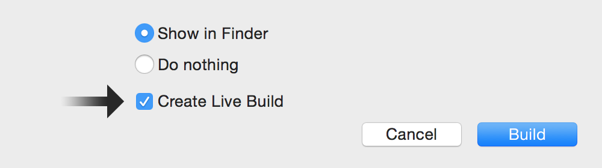
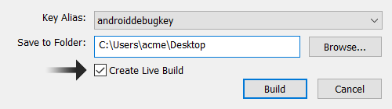

Live builds are a powerful and efficient way to see exactly how your
Build and deploy your app just once and then see code/assets update almost instantly on your devices.
Improve your workflow by testing on multiple devices and different platforms concurrently, all from a single code base.
Iterate on projects faster without rebuilding them to see the final result, even if they use native plugins like ad providers or game networking.
To use live builds on Windows, you must install iTunes.
To create a live build, simply follow these steps:
Confirm that the first several settings are correct in terms of how you typically build an app from the Solar2D Simulator. If you’re not familiar with preparing/building apps for devices, please see the following guides:
Only Development provisioning profiles
| macOS | Windows |
|---|---|
|  |  |
After the build is successfully completed, a .CoronaLiveBuild file will be created in the project’s root directory and the project will be added to Corona Live Server.
Install the app on your desired device(s) as usual. If you’re not familiar with this process, please see the documentation for iOS, Android, Kindle Fire, or tvOS.
You can install the same compiled/built app on multiple devices. For example, if you generate a standard .apk for Android, you can install it on multiple
When you run the app, make sure that the device(s) you’re using are on the same local network as the computer where Corona Live Server is running.
Modifications to project configuration/setup files like build.settings and config.lua will not typically be reflected when the live build updates. Thus, you should generate a new live build and
If you experience any issues with project syncing, please consult the Troubleshooting section below.
Corona Live Server is an application which syncs project changes over your local network. Every time you create a live build, Simulator will initiate it and automatically add the built project to the Corona Live Server project list.
In order to sync a project, Corona Live Server must find a valid .CoronaLiveBuild file. As outlined above, this will be created when doing a live build for the project.
To start Corona Live Server manually, select
You can add a project by pressing [+] and selecting the folder containing the project, or by simply dragging and dropping a folder onto the Corona Live Server dock icon (macOS) or shortcut (Windows).
Clicking the “close” button on the Corona Live Server window does not shut it down. To exit/quit entirely, do so from its main application menu or, alternatively, from the
Closing the project list window will not stop Corona Live Server. You can
Once a live build is successfully created, the source project will contain a hidden .CoronaLiveBuild file in its root directory. This file contains the information required to synchronize the project between the device and the development machine.
Typically, you will not need to edit the contents of this file. However, in very specific cases, it can be modified to customize the behavior of live builds and Corona Live Server:
key = XXXXXXXX-YYYY-ZZZZ-WWWW-AAA0987654321 #ip = #port =
key — Do not modify this property. This ip/port — Remove the # from each and specify these two values to use a static address and disable automatic discovery. This will enable live builds to work on older Android devices and, potentially, resolve some network issues. The port value should be a number between 1025 and 65534.If the live build doesn’t update/refresh, please proceed through the following instructions. If functionality returns to normal at any step along the way, do not proceed further.
.CoronaLiveBuild file as outlined in the Live Build File section above.